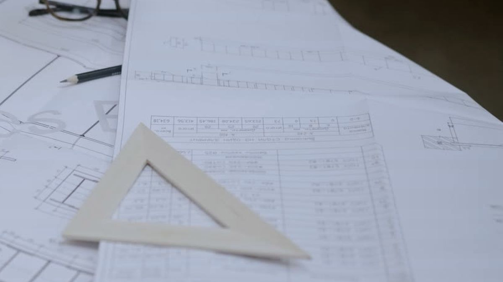

Reformas de vehículos: proyecto técnico y certificado para la ITV
Si has modificado un vehículo, la ITV no te lo pasa sin papeles. Redactamos y firmamos la documentación de ingeniería que pide tu reforma, y te decimos cuál es antes de cobrarte nada.

Qué reformas legalizamos
Cada reforma tiene su tipo y su documentación según el Manual de Reformas de Vehículos. Estas son las más habituales:
- Camperización
- Enganche de remolque
- Cambio de motor
- Suspensión y altura
- Llantas y neumáticos
- Furgón a mixto
- Grúas y plataformas
- Vehículo agrícola
Si la tuya no está en la lista, mándanos la ficha técnica y unas fotos: te decimos si necesita proyecto y qué documentos pide.
Qué te entregamos
Según el código de reforma, preparamos el proyecto técnico y el certificado final de obra cuando procedan. Te indicamos también el informe de conformidad y el certificado de taller que debas aportar a la ITV, para que no haya sorpresas en la estación.
Proyecto técnico
Descripción y justificación de la reforma, cálculos y planos, cuando el tipo de reforma lo exige.
Certificado final de obra
Acredita que la reforma se ha ejecutado conforme al proyecto.
Ficha técnica reducida
Solo en los casos en que corresponde, con las características reales del vehículo.
Cómo funciona
Nos mandas la ficha técnica del vehículo y fotos de la reforma.
Te decimos qué documentación pide tu caso y cuánto cuesta.
Redactamos y firmamos lo que corresponda.
Lo presentas en la ITV. Si te ponen pegas, lo defendemos nosotros.
Normativa
La tramitación de reformas se rige por el Real Decreto 866/2010 y el Manual de Reformas de Vehículos del Ministerio de Industria. Documentación con visado colegial cuando el trámite lo requiere.
Preguntas frecuentes
¿Mi reforma necesita proyecto?
Depende del tipo de reforma. Algunas solo piden documentación del taller y otras, proyecto técnico firmado y certificado de dirección de obra. Con la ficha técnica y unas fotos te lo decimos sin compromiso.
¿Cuánto cuesta?
Depende del tipo de reforma y de la documentación que pida. Te damos un precio cerrado antes de empezar, sin coste por consultarlo.
¿Tengo que llevar el vehículo a algún sitio?
No para la documentación: la preparamos a distancia con la ficha técnica y las fotos del vehículo. Si hace falta ver el vehículo, lo acordamos contigo.
¿Dónde trabajáis?
En toda la provincia de Almería: la capital, El Ejido, Roquetas de Mar, Adra, Vícar, La Mojonera, Berja, Níjar, Huércal-Overa, Vera y el resto de municipios. Si el trabajo lo permite, también en el resto de Andalucía.
Cuéntanos tu caso
Respondemos en menos de 24 h laborables, con precio cerrado y sin compromiso.
Otros servicios
- Certificación energéticaPara vender o alquilar: visita, cálculo, etiqueta y registro.
- Legalización de instalacionesMemoria o proyecto, certificados y tramitación ante la Junta.
- Licencias de actividadProyecto de actividad y tramitación ante el ayuntamiento.
- Proyectos industrialesNaves, estructuras metálicas e instalaciones, con respaldo documental.
- Desarrollo electrónicoPCB, firmware, impresión 3D y automatización, hechos en casa.